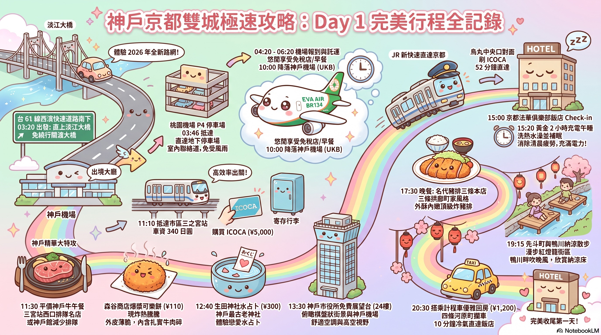
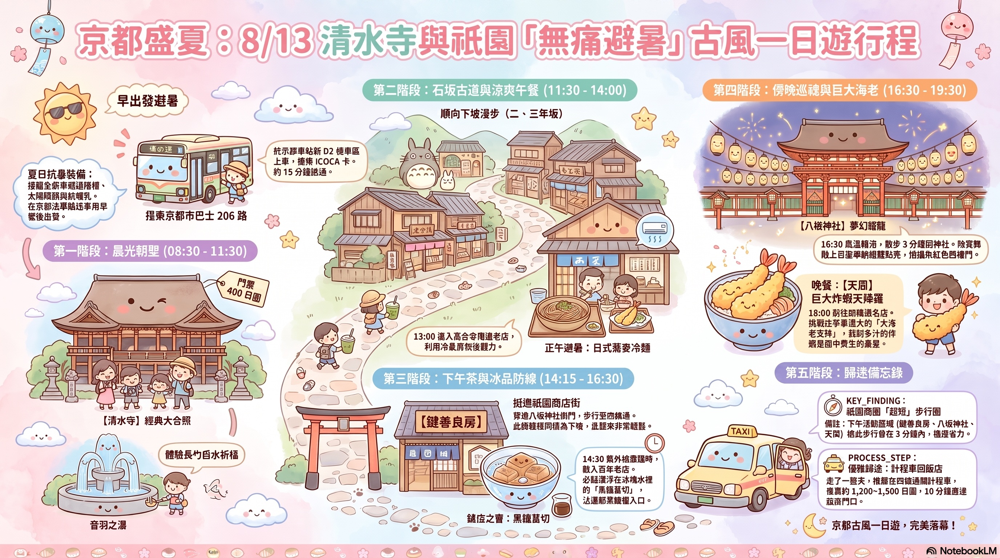
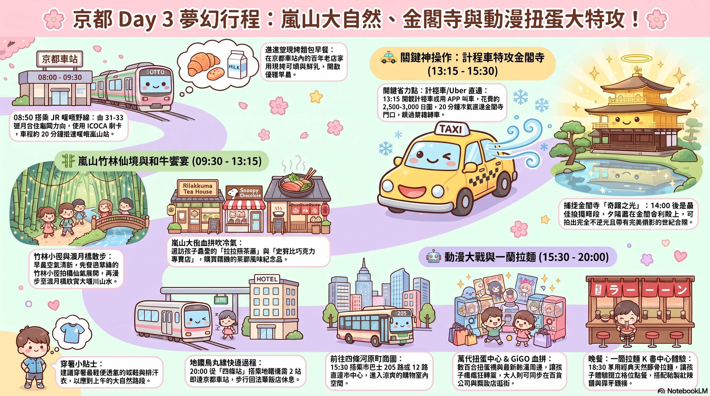
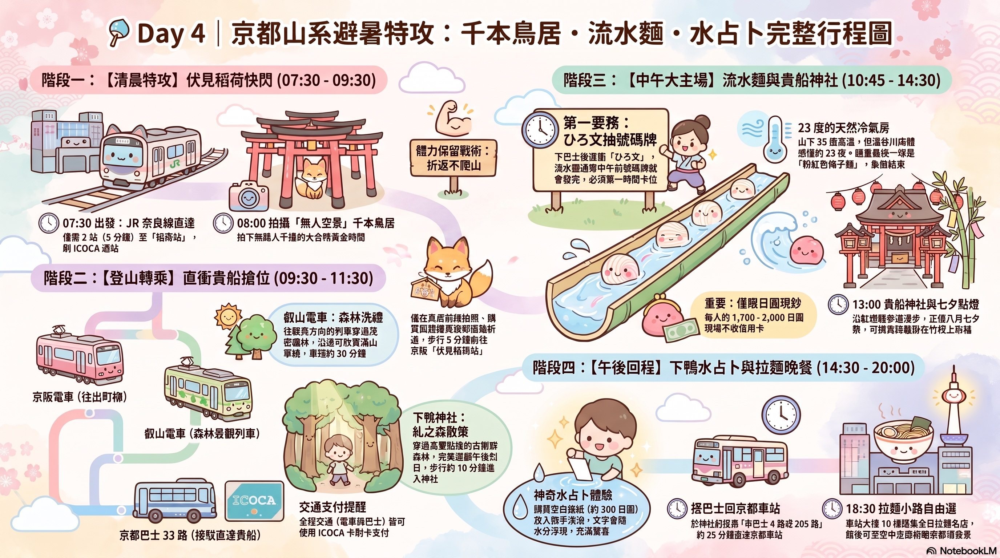
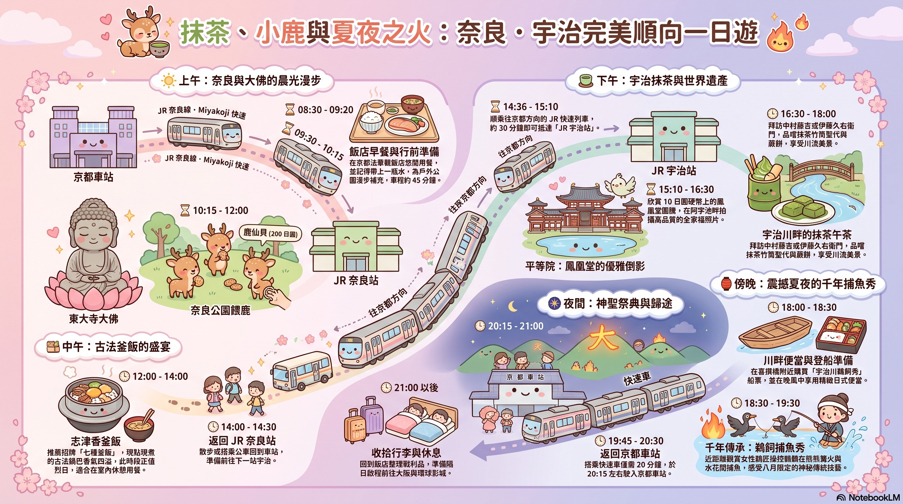
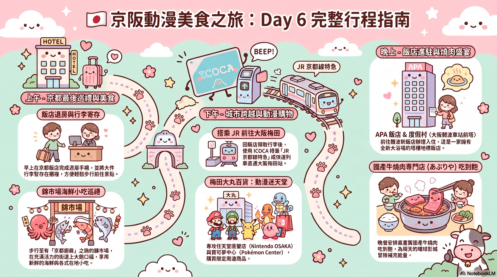
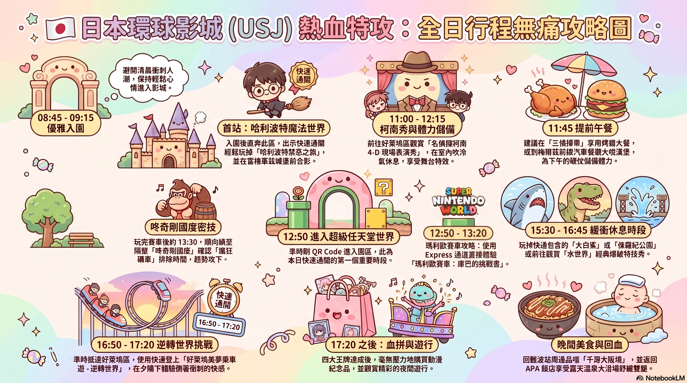
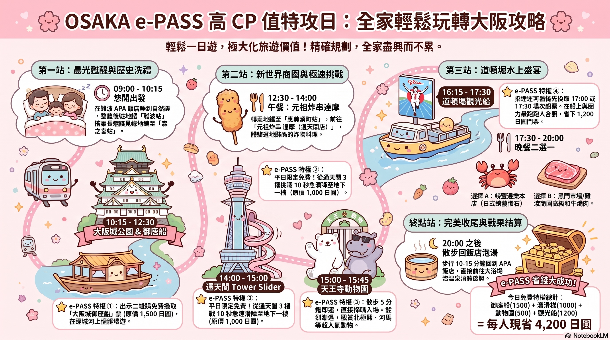
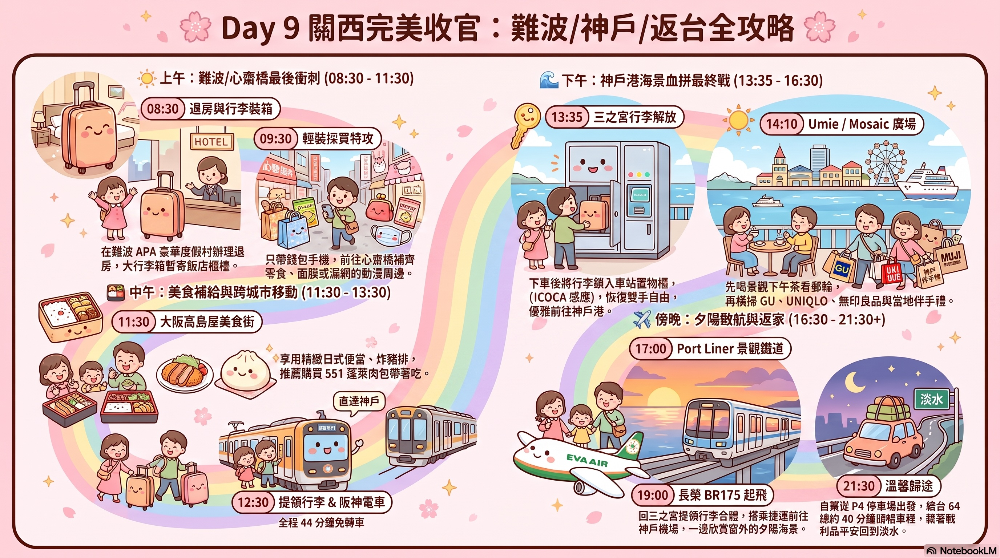

⚠️ 離線觀看提示
親愛的！如果您在飛機上或日本當地無網路觀看時，請將下載的「第一天.jpg」圖片檔案與此網頁放置在同一個資料夾中，網頁就能100%不需要網路完美顯示可愛地圖囉！
💡 本日攻略：清晨 03:20 淡水直上 2026年最新通車的 淡江大橋 接台61線高架公路，只要 26 分鐘神速抵達桃園機場！一落地神戶即展開精華神戶牛與生田神社水占卜之旅，隨後前往京都，在法華飯店午休兩小時充電，慢活享用名代豬排，悠閒散步鴨川！
🚗 03:20 - 03:46
全新極速通車：直上淡江大橋 ➡️ 台61線（西濱快速公路）
- 黃金自駕路線：自淡水端（沙崙路／中正路二段匝道）直上已通車的淡江大橋，跨越淡水河口！免去繞行關渡大橋的噩夢。
- 超速大連結：八里端直接高架接軌台61線西濱公路一路南下，轉國道系統。清晨無塞車，安全、流暢且無紅綠燈！
- 極致省時：里程大幅縮短 15 公里，開車僅需 26 分鐘直達桃園機場！
🗺️ 導航至 淡江大橋
🅿️ 03:46 - 04:20
輕鬆停車：第二航廈 P4 地下停車場
- 免受風雨：因為極速開通，超前抵達！直接開入第二航廈正下方的 P4 停車場，走室內聯絡通道直達 3 樓出境大廳。
- 優雅整裝：時間極度寬裕，帶家人優雅上洗手間，排隊準備長榮 BR134 行李託運。
🗺️ 導航至 二航 P4 停車場
🚋 10:00 - 11:30
飛達神戶與 ICOCA 行李寄存
- 神戶落地：10:00 順暢降落神戶機場 (UKB)。單買單程票（340 日圓）搭乘 Port Liner 捷運抵達市區「三之宮站」。
- 實體 ICOCA 購入：在 JR 三之宮站自動售票機現金購買 3 張實體 ICOCA（加值 5,000 日圓）。
- 解放雙手：大行李箱直接鎖入車站大廳 Coin Locker（可直接嗶 ICOCA 解鎖）。
🗺️ 導航至 JR 三之宮站
🥩 11:30 - 12:40
美食大特攻：平價神戶牛 ➡️ 森谷商店爆漿可樂餅
- 平價神戶牛：前往三宮站西口附近的懷舊風名店（若排隊太長可移防隔壁座位較多的「神戶館」），享用平價美味神戶牛鐵板燒！
- 森谷商店可樂餅：元町商店街入口老字號肉舖。外帶現炸 **神戶牛可樂餅**（110 日圓），外皮極薄脆，內餡充滿大塊牛肉碎肉感，帶上火車當最讚點心！
🗺️ 導航至 森谷商店元町本店
🔮 12:40 - 13:30
生田神社參拜與浪漫水占卜
- 神戶地標：漫步 5 分鐘造訪日本最古老結緣神社之一【生田神社】。
- 神奇水占卜：購買空白籤詩放入森林御手洗池水中，運勢文字便會慢慢神奇浮現，超好玩！
🗺️ 導航至 生田神社
🏢 13:30 - 14:00
神戶市役所 24 樓免費高空景觀台
- 免費高空視野：搭乘電梯直上 24 樓免費觀景台吹強冷氣。
- 絕佳眺望：天氣好時可將神戶棋盤格市景與剛剛落地的神戶機場盡收眼底。
🗺️ 導航至 神戶市役所觀景台
🏨 15:00 - 15:20
抵達京都：京都法華俱樂部飯店 Check-in
- 新快速直達：14:07 搭乘 JR 新快速列車直奔京都（車程固定 52 分鐘，直刷 ICOCA 卡）。
- 最神黃金地段：京都車站「烏丸中央口」出站過馬路僅需 1 分鐘，直達飯店辦理入住，免去拖著大行李箱走路的疲憊。
🗺️ 導航至 京都法華俱樂部飯店
🛌 15:20 - 17:30
全家大補眠與高熱水澡
- 黃金 2.5 小時：全家洗熱水澡、徹底躺平大睡一覺！
- 元氣滿點：有效把凌晨 3 點多起床的疲勞一掃而空，充飽電力再出發！
🥩 17:30 - 19:15
晚餐：名代豬排三條本店
- 町家老店：搭地鐵至「京都市役所前站」，穿過古意的三條拱廊。在典雅的町家竹林長廊下拍張全家大合照！
- 頂級炸豬排：大口享用外酥內嫩、肉質香甜多汁的殿堂級炸豬排。
🗺️ 導航至 名代豬排三條本店
🏮 19:15 - 20:30
夏夜漫步：先斗町 ➡️ 鴨川畔納涼
- 古風燈籠：飯後順向往南穿過紅燈籠高掛、古色古香的先斗町石板路。
- 鴨川納涼床：走到四條大橋下的鴨川畔，坐在河床邊吹徐徐晚風，欣賞納涼床的點點燈光與璀璨夜色。
- 愜意歸途：在四條河原町路邊直接搭計程車回飯店（車程 10 分鐘，車資約 1,200 日圓），舒服入睡。
🗺️ 導航至 先斗町

⚠️ 離線觀看提示
親愛的！如果您在飛機上或日本當地無網路觀看時，請將下載的「第二天.jpg」圖片檔案與此網頁放置在同一個資料夾中，網頁就能100%不需要網路完美顯示可愛地圖囉！
🚨 【重要防線】清水寺出來後的二年坂、三年坂商店街區域公共廁所極少！星巴克百年榻榻米店也僅有一間男女公用廁所，排隊極長！強烈要求全家在離開清水寺前，務必在寺廟內先上完廁所！
💡 本日攻略：08:00 前往巴士總站搭公車，搶在 09:30 和服遊客大湧入前拍下清幽的清水寺空景！午後烈日高照時，躲進祇園百年鍵善良房品嚐黑糖葛切，傍晚跨過四條大橋到 高島屋 T8 暢享任天堂京都旗艦店、中村藤吉抹茶，京都塔高空秘徑完美合影！
🚌 08:00 - 08:30
起點 ➡️ 公車特攻：搶在和服大軍前抵達
- 乘車點：步行至飯店對面的「京都車站前巴士總站 (D2 候車區)」！
- 刷 ICOCA 搭車：搭乘京都市巴士 206 路（往祇園・三条京阪方向），在「五條坂」站下車（車程約 15 分鐘），隨後順著茶碗坂緩坡徒步上山。
- 出門裝備：今天曝曬大，出發前幫全家備妥遮陽帽、太陽眼鏡與高係數防曬乳。
⛩️ 08:30 - 10:00
第一站 ➡️ 【清水寺朝聖與舞台大合照】
- 購票付款：清水寺門票僅能付現（大人 400 日圓）。
- 仁王門：獨特的「屏風視覺」，從下往上拍，完全看不到裡面。
- 三重塔：日本最大的木造三重塔之一，坐落半山腰，可俯瞰整個京都市。
- 鐵法杖與出世大黑天：挑戰大殿修行鐵法杖（臂力大考驗！），隨後參拜出世大黑天祈求財運。
- 敲鐘與本堂冥想：脫鞋入本堂，敲擊巨大銅缽，合十聆聽鐘聲與蟲鳴，沉靜心靈。
- 經典大合照：漫步至奧之院，拍下無人、最金碧輝煌的懸空「清水舞台」大合照！
⛩️ 清水寺 正門仁王門
🔮 10:00 - 10:20
祈福 ➡️ 【音羽之瀑三選一祈福】
- 聖水體驗：走下舞台來到命名由來的音羽之瀑。
- 三選一規則：面對瀑布有三條泉水（健康、戀愛、學業），用長柄勺接水飲用。切記只能選一條喝一口！如果貪心喝了多個，願望不會實現！推薦全家都選最珍貴的「健康」泉水。
🔮 音羽之瀑
🚶 11:30 - 12:40
散步 ➡️ 【三年坂、二年坂散步與本家西尾免費試吃】
- 順向下坡：一路悠閒散步往下，十分輕鬆省力。
- 本家西尾生八橋（清水坂店）：超級佛心休息區！店內大方提供免費熱茶與各種口味生八橋試吃。極推不甜膩的黑芝麻口味，搭配熱茶就是最精緻的免費下午茶！
- Snoopy Chocolat（清水店）：裝潢極可愛！必買清水坂限定的 Snoopy 鐵盒巧克力與限定馬克杯。
- 七味家本舖：300 年老字號七味粉店（注意海關管制成分）。
☕ 12:40 - 13:00
打卡 ➡️ 【二年坂百年日式榻榻米星巴克】
- 全球唯一：完整保留百年日式町家古蹟外觀。
- 入座密技：樓梯很窄，上樓必須先尋找二樓的塌塌米座位（需脫鞋），安頓好後再下樓點咖啡，極具京都風情！
☕ 百年榻榻米星巴克
🍡 13:00 - 13:30
避暑 ➡️ 【藤菜美高台寺店：寬敞吃糰子】
- 消暑寶藏店：比起總是大排長龍的二年坂本店，高台寺店空間非常寬敞且有冷氣座位！
- 下午茶：點一份招牌「醬油糰子」與冰抹茶（約 300 多日幣），在冷氣房裡好好歇腳。
- 背景超乾淨拍照點：後方的停車場空地上，可以無電線桿、完美拍攝高聳的「八坂之塔」。
🍜 13:30 - 15:30
午餐與消暑 ➡️ 高台寺蕎麥麵 ＆ 鍵善良房黑糖葛切
- 午餐避暑：在高台寺附近找家典雅的蕎麥麵店，享用冰涼清爽的蕎麥冷麵配天婦羅，避開正午烈日。
- 百年鍵善良房：午後兩點半，躲進祇園百年和菓子名店【鍵善良房】。
- 鎮店之寶：必點「黑糖葛切 (Kuzukiri)」！透亮的葛切盛在冰塊水中，夾起沾上沖繩黑糖蜜，入口冰涼滑順，消暑解疲勞！
⛩️ 15:30 - 16:30
黃門漫步 ➡️ 【八坂神社與祈願兔】
- 舞殿點燈：黃門時分，正對面八坂神社中央舞殿上的上百座奉納燈籠會緩緩點亮，散發祭典極致浪漫。
- 大國主社：參拜超萌「祈願兔」，將願望紙條塞入小白兔瓷偶腹中奉納。
- 禮儀注意：花見小路禁止闖入私人小巷拍照，若遇藝伎請絕對不要對其拍照。
⛩️ 八坂神社
🎮 16:30 - 18:30
潮流朝聖 ➡️ 【高島屋 T8 中村藤吉 ＆ 任天堂旗艦店】
- 中村藤吉（高島屋 T8 3樓）：抹茶名家下午茶！必點經典「抹茶聖代 (巴菲)」（層次多變超好吃！鬆餅偏乾不推）。等位時可在隔壁「金子眼鏡」挑選極輕職人鏡框。
- 任天堂旗艦店：孩子最瘋狂的動漫聖地！
1F：巨大瑪利歐出水管雕像合照！
7F：紅白機賣場買京都店限定周邊。
8F：天台廣場重現遊戲「破關終點旗」，全家擺出瑪利歐經典跳躍動作拍照！
🥩 18:30 - 20:30
晚餐 ➡️ 祇園天周 或是 車站拉麵小路
- 選項 A：祇園天周（享用比手掌還大的巨型海老炸蝦天丼，飯後直接攔計程車 10 分鐘，車資約 1,200 日圓直達法華飯店）。
- 選項 B（極推）：拉麵小路「冰護熟成豚骨拉麵」（走了一天累了，直接坐地鐵 2 站直達京都車站）。品嚐外觀「粉紅色熟成豬肉片」（口感宛若頂級火腿）與入口即化的超厚滷豬肉，極軟嫩！
🗼 19:30 - 20:00
高空拍照 ➡️ 京都車站「空中秘徑 Skyway」
- 高空秘密通道：吃完拉麵，從京都車站中央口右側手扶梯直上頂樓，走進 Skyway 空中走廊。
- 絕佳合照視角：完全免人擠人、能以極佳的水平視角與整座璀璨京都塔驚艷大合照，拍完過馬路 1 分鐘回房躺平睡覺！
🗼 空中秘徑 Skyway

⚠️ 離線觀看提示
親愛的！如果您在飛機上或日本當地無網路觀看時，請將下載的「第三天.jpg」圖片檔案與此網頁放置在同一個資料夾中，網頁就能100%不需要網路完美顯示可愛地圖囉！
💡 本日攻略：上午在進進堂享用現烤可頌與咖啡，搭 JR 直奔嵯峨嵐山站。大逛竹林小徑、渡月橋，大街享用炙燒和牛與抹茶，中段特別祭出計程車冷氣特攻，20 分鐘直達金閣寺大門！下午兩點後在金閣寺拍下絕美倒影與金碧輝煌全家福。傍晚河原町萬代扭蛋與 GiGO 暢玩，晚餐大口吸入一蘭拉麵！
🥐 08:00 - 08:50
早餐：進進堂 現烤麵包
- 烘焙名鋪：步行至京都車站內，品嚐百年烘焙老字號「進進堂」現烤可頌、香濃三明治、熱咖啡與鮮乳。
- 鐵道嵐山：08:50 嗶 ICOCA 進入 JR 剪票口，31-33 號月台搭乘「JR 嵯峨野線」至「嵯峨嵐山站」（車程約 20 分鐘）。
🥐 進進堂京都車站店
🎋 09:30 - 12:00
仙境漫步：竹林小徑 ➡️ 渡月橋 ➡️ 嵐山大街血拼
- 竹林晨光：清晨山區空氣清新，穿過陽光自竹葉間灑落的震撼「竹林小徑」，幫全家拍下充滿仙氣的照片。
- 渡月橋山水：順向下坡漫步到渡月橋畔，欣賞大堰川寬闊山水景致。
- 大街血拼：大逛史努比專賣店、拉拉熊茶屋，吹冷氣購買精緻伴手禮。
🍱 12:00 - 13:15
午餐：炙燒和牛便當 或 湯豆腐
- 消暑美味：正午陽光猛烈，躲進大街高質感餐館，大口享用香氣四溢、油脂細膩的炙燒和牛丼飯，或是極消暑的清爽日式湯豆腐。
🚖 13:15 - 13:40
計程車冷氣特攻：金閣寺直達
- 神級省力點：午餐後不轉車，直接在大街攔計程車，或用手機 APP 叫 Uber / GO。
- 20分鐘直達：車資約 2,500 ~ 3,000 日圓，3人分攤超划算！全家在冷氣車廂內舒服小憩，直接送抵金閣寺大門，體力大保存！
🚖 金閣寺門口
⛩️ 13:40 - 15:30
午後奇蹟：金閣寺（鹿苑寺）倒影大合照
- 極佳拍照時光：下午兩點後，太陽西斜，金黃色陽光直射鏡湖池中央的金閣舍利殿，拍下不逆光、帶完美倒影的璀璨全家福大合照！
- 御守門票：大人 500 日圓，門票是一張極具收藏價值的宣紙御守符。
🎰 16:15 - 18:30
孩子的天堂：萬代官方扭蛋中心 ＆ GiGO 夾娃娃
- 市巴直達：金閣寺前刷 ICOCA 搭乘 205 或 12 路公車直達河原町。
- 扭蛋大特攻：大逛冷氣極強、數百台機器的「萬代官方扭蛋中心」，讓孩子爽快轉蛋、夾娃娃，大人則在藥妝店與百貨輕鬆吹冷氣。
🎰 萬代官方扭蛋中心
🍜 18:30 - 20:00
晚餐：一蘭拉麵 京都河原町店
- 經典感動：帶孩子體驗最經典「一人一格」K書中心吃麵，按鈴點餐。天然豚骨湯配特製紅辣醬與叉燒。
- 滿足返程：地鐵四條站搭烏丸線 2 站直達京都車站，過馬路 1 分鐘回房。
🍜 一蘭 京都河原町店

⚠️ 離線觀看提示
親愛的！如果您在飛機上或日本當地無網路觀看時，請將下載的「第四天.jpg」圖片檔案與此網頁放置在同一個資料夾中，網頁就能100%不需要網路完美顯示可愛地圖囉！
💡 本日攻略：07:30 晨光出發，快閃伏見稻荷大社，搶在九點遊客擠爆前拍下無人空景「千本鳥居」大合照。轉乘京阪電車與叡山景觀電車直衝貴船山區「ひろ文」川床，搶拿第一批流水麵號碼牌！在僅有 23 度的溪谷中，吃著冰涼滑下的細麵。下午穿過下鴨神社糺之森走樹蔭，體驗御手洗川水占卜。
🦊 07:30 - 09:15
伏見稻荷大社：千本鳥居空景特攻
- 晨光無人空景：JR奈良線坐2站（5分鐘）。八點前抵達避開曝曬，此時山風清涼，是唯一能拍到完全無人「千本鳥居」全家大合照的黃金時刻。
- 體力分配：拍完前段鳥居與狐狸繪馬後，切記「不要爬整座山」，直接原路折返，把體力留給下午的貴船！
🦊 伏見稻荷大社
🚂 09:30 - 10:45
叡山電車：森林景觀列車登山
- 京阪電車特快：伏見稻荷站搭往出町柳方向，直達「出町柳站」。
- 叡山森林列車：轉乘叡山電車（往鞍馬方向），列車開進滿山綠意盎然的森林深處，約 30 分鐘抵達「貴船口站」。
- 巴士接駁：出站立刻轉搭京都巴士 33 路，5 分鐘直送貴船溪谷上方。
🚂 叡山電車貴船口站
🥢 10:45 - 13:00
中午主場：直奔「ひろ文」川床流水麵
- 流水麵先決：下巴士什麼都別管，直接快步往山谷深處走 10 分鐘，衝去「ひろ文」川床門口排隊！
- 付現抽牌：現場掏日圓現鈔付現（不收卡，每人約 1,700 ~ 2,000 日圓）拿到入場號碼。
- 23度天然冷氣：在溪流瀑布正上方的塌塌米靜心等待。攔截竹管咻咻滑下的日式細麵，最後一球是驚喜粉紅梅子麵，孩子絕對大呼過癮！
🥢 kibune ひろ文
⛩️ 13:00 - 14:30
貴船神社：七夕點燈與朱紅獻燈
- 朱紅獻燈：漫步至極神聖的貴船神社。在最出名的參道石階旁，與兩側古色古香的朱紅色獻燈拍下全家福。
- 七夕許願：正值八月七夕點燈祭，可在各色詩籤寫下心願掛在竹枝。
⛩️ 貴船神社
🔮 15:30 - 17:15
世界遺產：下鴨神社糺之森水占卜
- 糺之森古森林：原路下山回出町柳。步行穿過高聳挺拔的原生林「糺之森」，完美遮蔽烈日。
- 御手洗川水占卜：買張空白神籤放入清澈溪水中，字體在水波間緩緩顯現，極為神奇有趣！
🔮 下鴨神社
🍜 18:30 之後
晚餐：京都車站「拉麵小路」自由選
- 美味自選：直接搭公車回到京都車站。10 樓【京都拉麵小路】匯集全日本十多家頂尖拉麵流派。全家自由在售票機前各自選擇想吃的口味，高興又省心！
🍜 拉麵小路

⚠️ 離線觀看提示
親愛的！如果您在飛機上或日本當地無網路觀看時，請將下載的「第五天.jpg」圖片檔案與此網頁放置在同一個資料夾中，網頁就能100%不需要網路完美顯示可愛地圖囉！
💡 本日攻略：搭乘快速列車直奔奈良公園，看宏偉的東大寺大佛，用鹿仙貝逗逗禮貌點頭的可愛小鹿。正午在志津香品嚐焦香古法釜飯，下午順向北上前往抹茶故鄉「宇治」，漫步世界遺產平等院鳳凰堂。傍晚在宇治川近距離欣賞神秘、篝火通明的「女性鵜匠千年鵜飼捕魚秀」，回京都車站還能在頂樓遠眺神聖的「五山送火（大文字燒）」點火典禮！
🦌 10:15 - 12:00
奈良特攻：東大寺巨佛 ＆ 奈良公園餵小鹿
- 奈良大佛：京都車站搭「みやこ路快速」直達 JR 奈良站（車程約 45 分鐘）。瞻仰世界最大的青銅佛像東大寺大佛，極震撼與莊嚴。
- 餵小鹿：奈良公園路邊買「鹿仙貝」（200日圓），讓孩子體驗小鹿鞠躬、敬禮討食的奇特好玩互動！
⛩️ 東大寺大佛
🍱 12:00 - 14:00
午餐：志津香釜飯（公園店 或 大宮店）
- 古法釜飯：奈良代表性名店。現點現煮、招牌七種釜飯，底層微微燒焦的焦香鍋巴超級誘人！正午剛好在冷氣房歇歇腳。
🍱 志津香 公園店
🍁 15:10 - 16:30
世界遺產：宇治平等院鳳凰堂
- 鳳凰展翅：奈良搭 JR 快速北上直達宇治。散步穿過茶香老街抵達平等院。
- 10円硬幣與萬圓鈔：欣賞倒映在阿字池上典雅、對稱的鳳凰堂，在綠意微風下，拍照質感極高。
🍁 平等院
🍦 16:30 - 18:00
抹茶防線：中村藤吉（平等院店）或 伊藤久右衛門
- 極致抹香：在宇治川畔的茶屋，享用消暑抹茶竹筒聖代與Q彈抹茶蕨餅，吹冷氣欣賞滔滔宇治川。
🍦 中村藤吉平等院店
🔥 18:30 - 19:30
本日大主場：震撼夏夜「宇治川千年鵜飼捕魚秀」
- 篝火通明：喜撰橋畔買觀光船乘船券。晚風徐徐下出航。
- 千年神技：漆黑河面燃起熊熊烈火，近距離看女性鵜匠操控繩索，指揮鸕鶿在水花與火光間潛水捕魚，是八月京都最珍貴的神祕宮廷技藝體驗！
🔥 鵜飼秀喜撰橋乘船處
🎆 20:15 - 21:00
隱藏驚喜：巧遇京都「五山送火（大文字燒）」
- 京都最神聖送火：搭 JR 奈良線快速回到京都車站。今晚是京都一年一度「五山送火」高潮！
- 最佳遠眺視角：不回房間，直接走到京都車站大樓頂樓「空中走廊（Skyway）」或露天大階梯頂端，與京都民眾一起，驚喜遠眺黑夜周圍山頭點亮的巨大「大」字型篝火！
🗼 車站空中通道 Skyway

⚠️ 離線觀看提示
親愛的！如果您在飛機上或日本當地無網路觀看時，請將下載的「第六天.jpg」圖片檔案與此網頁放置在同一個資料夾中，網頁就能100%不需要網路完美顯示可愛地圖囉！
💡 本日攻略：京都上午辦理退房（行李寄放櫃檯），大逛京都廚房「錦市場」海鮮烤串與小吃。下午返回飯店提行李，搭乘 JR 特急前往大阪，於梅田大丸百貨暢玩任天堂與寶可夢中心。傍晚進駐難波 APA 塔樓，享受露天溫泉大浴場，晚上享用國產牛燒肉吃到飽！
🚶 09:30 - 11:30
京都最後巡禮：錦市場海鮮與小吃
- 京都廚房：悠閒退房寄存行李。走路前往錦市場，大快朵頤現烤扇貝、海鮮、章魚蛋、豆乳甜甜圈等京都風味小吃，早午餐一次飽足！
🚶 錦市場
🚋 12:30 - 13:30
城市跨越：搭 JR 特急前往大阪梅田
- 特急快速直達：回飯店拿行李，搭乘 JR 京都線快速或特急列車直達大阪梅田站，車程約 30 分鐘，全程直刷 ICOCA。
🚋 大阪梅田站
🛍️ 13:30 - 16:30
動漫朝聖：梅田大丸百貨 Nintendo & 寶可夢
- 大丸梅田店：朝聖大阪旗艦店「Nintendo OSAKA」與超大型「寶可夢中心（Pokemon Center）」，大買限定周邊與娃娃。
🛍️ 大丸梅田店
🏨 17:00
大阪新地標入住：APA 飯店 & 度假村〈大阪難波車站前塔〉
- 極致享受：全新大浴場地標塔樓飯店！辦理 Check-in 置放行李，換上浴衣，晚上還能享受極致放鬆的露天溫泉大浴場！
🏨 難波 APA 塔樓
🥩 18:30
晚餐：國產牛燒肉専門店（あぶりや）吃到飽
- 燒肉盛宴：預約知名的高質感國產牛燒肉吃到飽名店。大口大口享用精緻現切牛肉、厚切牛舌與精緻沙拉、甜點，為隔天的環球影城儲備滿滿體力！
🥩 國產牛燒肉 あぶりや

⚠️ 離線觀看提示
親愛的！如果您在飛機上或日本當地無網路觀看時，請將下載的「第七天.jpg」圖片檔案與此網頁放置在同一個資料夾中，網頁就能100%不需要網路完美顯示可愛地圖囉！
💡 本日攻略：畢業主場！日本環球影城全日熱血特攻。早上不用戰鬥排隊，優雅入園首站「哈利波特魔法世界」暢玩禁忌之旅。中午看柯南秀吹冷氣吃漢堡，下午 12:50 快通准時攻陷超級任天堂世界賽車，並現場排隊攻下咚奇剛瘋狂礦車！黃昏快通尖叫好萊塢乘車遊，晚上在影城外吃千房大阪燒！
🎒 08:45 - 09:15
入園首站 ➡️ 哈利波特魔法世界
- 出發與快通：優雅入園，直衝【哈利波特魔法世界】。用快速通關無腦暢玩「哈利波特禁忌之旅」，在巍峨的霍格華茲城堡前拍全家福！
🎒 日本環球影城
🎬 11:00 - 12:15
好萊塢：名偵探柯南 4-D 秀 ＆ 提前午餐備戰
- 柯南劇場秀：進劇場看震撼全場、不需要預約場次的「名偵探柯南 4-D 現場秀」，吹強冷氣、享受震撼特技！
- 提前午餐：11:45 提前在美式餐廳享用大漢堡薯條填飽肚子，備戰下午硬仗！
🍄 12:50 - 13:50
下午大主場 ➡️ 超級任天堂世界
- 瑪利歐賽車：12:50 刷快通二維碼進入五彩繽紛的任天堂園區。直衝 Express 快速通道，爽快飆玩「庫巴的挑戰書」！
🍄 超級任天堂世界
🦍 13:50 - 15:30
新園區特攻 ➡️ 咚奇剛國度瘋狂礦車
- 瘋狂礦車密技：玩完賽車，全家已在園區深處，順向走過來隔壁「咚奇剛國度」！看好排隊時間，人既然進來了，就跟著現場排隊一併把新蓋的礦車攻下！
🚀 16:50 - 17:20
黃昏特攻 ➡️ 好萊塢美夢乘車遊 - 逆轉世界
- 夕陽尖叫：16:50 準時抵達好萊塢區。快通免排，在橘紅色的夕陽與涼爽晚風下體驗倒退急馳的極速快感，過癮無比！
🛍️ 17:20 之後
輕鬆血拼 ➡️ 晚餐：千房大阪燒 ➡️ 飯店溫泉大浴場
- 千房大阪燒：影城外商圈或難波站，享用熱騰騰、滋滋作響的千房大阪燒（或螃蟹道樂）。
- 泡湯解廢腿：走了一整天路，回難波 APA 飯店直奔露天溫泉大浴場泡湯回血，全家完美睡好覺！
🍳 千房大阪燒 難波店

⚠️ 離線觀看提示
親愛的！如果您在飛機上或日本當地無網路觀看時，請將下載的「第八天.jpg」圖片檔案與此網頁放置在同一個資料夾中，網頁就能100%不需要網路完美顯示可愛地圖囉！
💡 本日攻略：這是星期三！完美的【OSAKA e-PASS 大阪樂遊券】高 CP 值特攻日！全家睡到自然醒，搭地鐵暢遊大阪城公園，乘坐金黃色「御座船」。中午吃通天閣炸串，挑戰平日免費玩、原價 1,000 日圓的「10秒高空巨型滑梯」！傍晚持樂遊券免費乘道頓堀觀光船，正面與跑跑人合照，晚上大嚼螃蟹道樂！
🏰 10:15 - 12:30
e-PASS 特權 ①：大阪城公園 ＆ 金黃御座船
- 金碧輝煌御座船：森之宮站下車。巍峨天守閣前拍全家福，出示 e-PASS 免費兌換原價 1,500 日圓的「大阪城御座船」船票。乘上金光閃閃的仿古黃金船，在護城河上吹風優雅賞景。
🏯 大阪城公園
🍢 13:00 - 14:00
午餐：新世界元祖炸串 達摩（串カツだるま）
- 昭和復古新世界：前往門口有憤怒老闆雕像的炸串達摩。沾上特製醬汁（不能重複沾醬），享用外皮金黃香脆、肉汁滿滿的炸牛肉與炸蝦！
🍢 元祖炸串 達摩通天閣店
🛝 14:00 - 15:00
e-PASS 特權 ②：通天閣 Tower Slider 巨型滑梯
- 10秒急速旋轉：平日限定福利！出示樂遊券免費兌換原價 1,000 日圓的高空巨型溜滑梯，從 3 樓展望台滑至 B1 樓，高科技感、刺激無比！
🗼 通天閣
🦁 15:00 - 15:45
e-PASS 特權 ③：天王寺動物園
- 百年動物園：隔壁散步 5 分鐘。e-PASS 掃碼免費入園。烈日渐退，悠閒觀賞亞洲象、北極熊、河馬，親子時光滿溢。
🦁 天王寺動物園
⛴️ 16:15 - 17:30
e-PASS 特權 ④：道頓堀水上觀光船
- 搶兌船票：驚安殿堂唐吉訶德摩天輪下，先持樂遊券免費換傍晚 17:00 或 17:30 夢幻黃金船票。
- 正面跑跑人合照：觀光船大約 20 分鐘巡航。當船行至經典「固力果跑跑人」看板前時，在船上拍下完全無遮擋的世紀經典合照！
⛴️ 驚安殿堂觀光船兌票處
🦀 17:30 - 20:00
晚餐：螃蟹道樂本店 或 黑門市場和牛燒肉
- 螃蟹和風宴：享用日式精緻螃蟹多吃懷石料理：烤蟹腳、刺身、蟹肉釜飯，邊吃邊欣賞繁華河畔夜景。
- 省錢結算：本日 e-PASS 免費特權人均累計節省高達 4,200 日圓門票費！純走路散步 10-15 分鐘輕鬆晃回飯店泡溫泉。
🦀 螃蟹道樂 本店

⚠️ 離線觀看提示
親愛的！如果您在飛機上或日本當地無網路觀看時，請將下載的「第九天.jpg」圖片檔案與此網頁放置在同一個資料夾中，網頁就能100%不需要網路完美顯示可愛地圖囉！
💡 本日攻略：退房行李寄放，難波心齋橋輕裝藥妝與動漫大補漏。中午大丸高島屋享用精緻便當與蓬萊肉包。搭乘阪神電車快速急行一車直達神戶三之宮，置物櫃鎖行李！兩手空空大逛全神戶最美海景 umie 購物中心，買齊布丁土產。搭 Port Liner 直達神戶機場，搭長榮 BR175 返台，出關在第二航廈正下方 P4 停車場取愛車，直上台61線西濱公路、開過通車的淡江大橋，26 分鐘瞬移回到淡水家！
🛒 09:30 - 11:30
最後採買特攻：難波 ＆ 心齋橋動漫藥妝補漏
- 補漏網之魚：APA 飯店辦理退房並寄放大行李，趁著早上商店街剛開門、人最少時，口袋塞手機與現金，將託買的面膜、零食與動漫周邊買齊。
🛍️ 心齋橋筋商店街
🍱 11:30 - 12:30
中午：大阪高島屋美食街與 551 蓬萊肉包
- 美食大口福：直接進入大阪高島屋百貨地下美食街，享用精緻日式便當，並買幾顆大名鼎鼎、熱騰騰的「551 蓬萊肉包」在路上吃。
🍱 大阪高島屋
🚋 12:50 - 13:34
跨城市大移動：阪神電車快速急行直達神戶
- 免轉車密技：回飯店提行李至難波站。嗶實體 ICOCA 刷進阪神電車剪票口，搭乘「阪神難波線・快速急行列車（往神戶三宮）」，車程固定 44 分鐘，一條龍不轉車直達神戶，在車上大睡一覺！
🚋 大阪難波站
🧳 13:35 - 14:00
神戶三之宮置物櫃：行李最終解放
- 雙手徹底解放：抵達神戶三之宮站。下車後在車站大廳，把所有大行李箱與剛剛買的戰利品「嗶 ICOCA」通通鎖進 Coin Locker，兩手空空出發！
🧳 三之宮站
🌊 14:10 - 16:30
海景血拼：神戶港 Umie / Mosaic 廣場
- 海景下午茶：三之宮站地鐵海岸線坐 2 站直達。在神戶最美海景購物中心，一邊吹強冷氣、一邊喝鬆餅下午茶看大郵輪。
- 伴手禮決戰：大逛超大間 UNIQLO、GU，買神戶布丁與 Frantz 魔法壺巧克力，痛快消費身上最後的所有日圓零錢！
🌊 神戶臨海樂園 umie
✈️ 17:00 - 19:00
Port Liner 最終電車 ➡️ 神戶機場報到
- 直奔機場：三之宮取行李，走到 Port Liner 車站嗶 ICOCA 搭上捷運，看著美麗的日落海景，車程 18 分鐘抵達神戶機場（UKB）。
- 順利登機：長榮航空櫃檯辦理行李託運、通過安檢。頂樓展望台看飛機。搭乘長榮 BR175（19:00 - 20:55）返台。
✈️ 神戶機場
🛣️ 21:30 之後
溫馨自駕歸途：淡江大橋 26 分鐘駛回淡水暖呼呼的家！
- 完美收官：出關提取行李。直接搭電梯到二航廈正下方的 P4 停車場取自家愛車。
- 避塞極速路：發動引擎走國道二號、國道一號，接台61線西濱公路北上，直接開過通車的淡江大橋回到淡水沙崙路！
- 自駕神紅利：深夜車程僅需 26 分鐘，優雅載著滿滿的回憶與大箱日本戰利品回到淡水溫暖的家，一條龍圓滿成功！